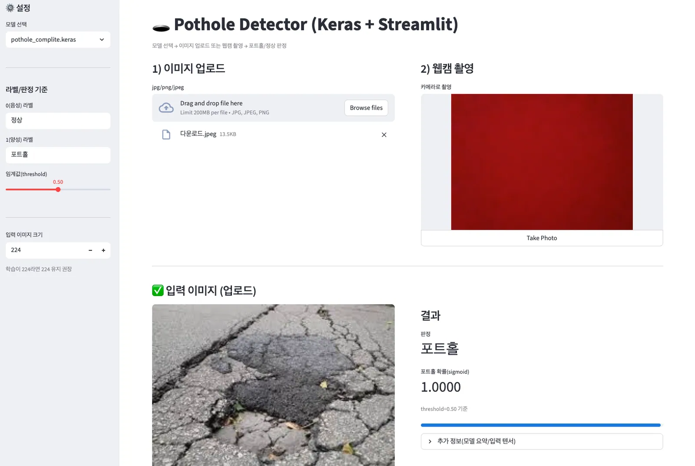

Deep Learning · CNN
딥러닝 CNN으로 포트홀을 찾아라
도로 이미지를 읽고, 특징을 학습하고, 포트홀을 분류하는 첫 CNN 프로젝트입니다.
동양고등학교 김진혁
학습 경로 보기
— pages
Course Map
오늘의 주행 경로
홈에서 출발해 머신러닝의 기초를 익히고, CNN을 거쳐 실제 포트홀 분류 모델까지 완성합니다. 한 번 방문한 페이지에는 체크가 표시됩니다.
Instructor
저는…
김진혁(kimjh0630@naver.com)
- 동양고등학교 교사(수학, 정보)
- 성균관대학교 일반대학원 수학교육전공 박사 수료
- 서울시교육청 초중등 AI교육 연구회 부회장
- (2022개정 교육과정) 『 데이터 과학 』 교과서 집필진(올드앤뉴)
- (2022개정 교육과정) 『 논리와 사고 』 교과서 집필진(세종)
- AIEDAP마스터 교원(서울, 경기, 인천, 제주 권역)
- 서울시교육청 AI융합교육 선도교사(2023~)
- 2026학년도 서울시교육청 AI중점학교 지원단
- 『인공지능 진로진학 교육자료』 집필진(서울시교육청, 2022)
- 『면접보고 대학가자』 집필진(올드앤뉴, 2023)
Before Class
수업에 들어가기 전에
설문에 응답하고, 수업 자료가 모인 구글 클래스룸을 확인합니다.
Today’s Goal · 01
우리의 오늘 목표
데이터 준비부터 인공지능 분류, 결과 시각화까지 하나의 흐름으로 연결합니다.
-
01
학습 데이터셋 준비
도로 이미지를 포트홀과 정상으로 나누어 모델이 학습할 재료를 준비합니다.
-
02
인공지능 분류
CNN이 이미지의 특징을 학습하고 두 범주를 구분하도록 만듭니다.
-
03
결과 시각화
모델이 내린 판단과 학습 결과를 화면에서 직접 확인합니다.


Today’s Goal · 02
직접 만든 모델을 웹에서 확인하기
이미지를 올리거나 웹캠으로 도로를 촬영하고, 학습한 모델이 포트홀인지 정상 도로인지 판정하는 과정을 완성합니다.
이미지 업로드
웹캠 촬영
포트홀 / 정상 판정